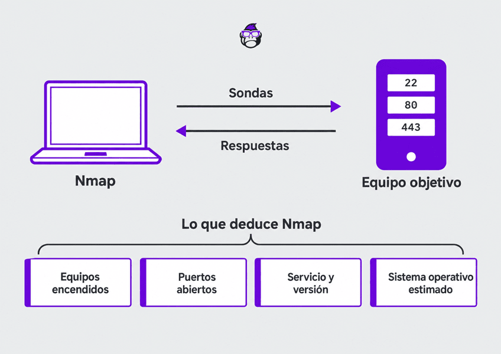
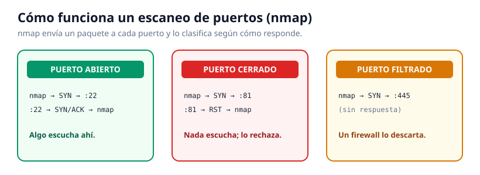

Conceptos necesarios · Layover (C1 · Introducción a CTFs)¶
Esta es la clase introductoria del curso. Antes de resolver tu primer boot2root (Layover, en HackTheBox) conviene tener claro qué es un CTF, dónde se juega y, sobre todo, cómo conectas tu máquina de ataque al laboratorio. No es la solución del reto: es la base sobre la que se apoya todo lo demás.
Cómo usar esta página
La primera vez, léela completa. Después úsala como referencia: si no entiendes un término en una táctica, búscalo aquí. La parte no publicada (Tarea) se describe solo a nivel de concepto, no de procedimiento.
1 · ¿Qué es un CTF?¶
Capture The Flag: un juego de seguridad donde resuelves retos y, al lograrlo, obtienes una
flag (una cadena, p. ej. HTB{...}, o el contenido de un archivo user.txt) que demuestra que
lo conseguiste. La flag es la prueba; lo que importa es el razonamiento del camino.
Tres formatos que te encontrarás:
| Formato | En qué consiste | Ejemplo |
|---|---|---|
| Jeopardy | retos sueltos por categoría (Web, Cripto, Pwn, Forense, RE…), cada uno con su flag | picoCTF, CTFs de competición |
| Boot2root | una máquina completa que comprometes de principio a fin: de un punto de entrada hasta root/Administrator |
HTB Layover (esta clase) |
| Attack/Defense | por equipos: defiendes tus servicios mientras atacas los del rival | CTFs presenciales avanzados |
Layover es boot2root: entras con pocas pistas y vas encadenando tácticas (recon → sniffing →
explotación → credenciales → lateral → privesc) hasta el control total. Suele haber dos flags:
user.txt (usuario sin privilegios) y root.txt (control total).
Legalidad
Solo atacas máquinas que te autorizan explícitamente (el laboratorio de HTB, tu propio equipo). Lanzar estas técnicas contra sistemas ajenos es ilegal. El CTF es el entorno autorizado para practicarlas.
2 · Plataformas de CTF (y cuáles son gratis)¶
| Plataforma | Tipo | Gratis |
|---|---|---|
| picoCTF | jeopardy, principiante | 100% gratis (picoGym siempre disponible) |
| HackTheBox | boot2root + jeopardy | máquinas activas y Starting Point gratis; las retiradas (con walkthrough oficial) → VIP |
| TryHackMe | guiado, principiante | mucho contenido gratis; rooms premium de pago |
| OverTheWire | wargames de Linux/bash | gratis |
| Root-Me | retos online (navegador / SSH) | gratis |
| VulnHub | VMs vulnerables para descargar (.ova) |
gratis; necesitas un hipervisor |
| PortSwigger Web Security Academy | labs web guiados | gratis (teoría + labs) |
En esta clase usamos HackTheBox porque Layover vive ahí. Para practicar por tu cuenta, picoCTF y TryHackMe son los más amables para empezar.
Dos formas de acceder al objetivo
En casi todas (picoCTF, HackTheBox, TryHackMe, Root-Me, PortSwigger) el objetivo está alojado:
conectas por navegador, por VPN o por SSH. VulnHub funciona distinto: descargas la máquina como
archivo .ova y la ejecutas en tu propio equipo. Para eso necesitas un hipervisor
(VirtualBox o VMware; KVM/QEMU en Linux). En VirtualBox se importa con Archivo → Importar servicio
virtualizado. Suele convenir poner su red en modo host-only para no exponer una VM vulnerable.
Videos: instalar un hipervisor y abrir un .ova
VirtualBox (gratis, código abierto):
- Instalarlo: Cómo instalar VirtualBox paso a paso
- Abrir un
.ova: Cómo instalar un archivo .OVA en VirtualBox
VMware Workstation Pro (gratis para uso personal; descárgalo del sitio oficial de Broadcom. Evita los videos que ofrezcan "activadores" o versiones "FULL": eso es software pirateado):
- Instalarlo: Descargar e instalar VMware Workstation Pro, gratis y legal
- Abrir un
.ova: Cómo instalar un archivo .OVA en VMware
Los enlaces de YouTube pueden cambiar o dejar de estar disponibles con el tiempo.
3 · HackTheBox: cómo moverte y encontrar Layover¶
HTB (hackthebox.com) es una plataforma de laboratorios. Lo mínimo para ubicarte:
- Crea cuenta e inicia sesión.
- Entra a Machines (menú Labs → Machines): el catálogo de boot2root. Hay activas (puntúan) y retiradas (con walkthrough oficial; requieren VIP).
- Busca "Layover" en el buscador de máquinas y abre su ficha.
- Spawn / Join: arranca tu instancia. HTB te asigna una IP objetivo (tipo
10.129.x.x). Apúntala, la necesitas para todo lo demás. - Connection pack: en el panel Connect / Access descargas tu archivo
.ovpn: es tu llave para entrar a la red del lab (siguiente sección).
Alternativa sin VPN: Pwnbox
HTB ofrece Pwnbox, una Kali en el navegador ya conectada al lab (sin montar VPN). Cómoda para empezar, con límite de horas en cuentas gratis. Aquí enseñamos la vía local (VPN + tu propia Kali) porque es la que usarás fuera de HTB.
La IP cambia
Si reinicias la máquina (respawn), HTB suele rotar la IP. Si de repente "no llega", lo primero es confirmar en el panel que sigues apuntando a la IP correcta.
4 · Conectar con el lab: la VPN¶
4.1 · Qué es y cómo funciona¶
Una VPN (Virtual Private Network) crea un túnel cifrado entre tu máquina y la red del
laboratorio, de modo que tu equipo se comporta como si estuviera dentro de esa red. HTB la usa para
que puedas alcanzar las IPs 10.129.x.x (y 10.10.x.x) del lab, que no existen en el internet
público.
Mecánicamente, al conectar con tu .ovpn:
- Se levanta una interfaz de red virtual
tun0hacia HTB. - El cliente instala rutas: "para llegar a
10.129.0.0/16, manda el tráfico portun0". - Desde ahí, un
ping 10.129.x.xsale por el túnel y alcanza tu máquina objetivo.
4.2 · Herramientas según tu sistema¶
| Sistema | Herramienta | Cómo |
|---|---|---|
| Linux | openvpn (CLI) |
sudo openvpn tu_pack.ovpn · o importar el .ovpn en NetworkManager |
| Windows | OpenVPN GUI u OpenVPN Connect | importar el .ovpn y conectar desde la bandeja |
| macOS | Tunnelblick u OpenVPN Connect | importar el .ovpn |
| Cualquiera | Pwnbox (navegador) | sin instalar nada; HTB ya viene conectado |
En Linux (lo que usaremos en clase):
Marcador de éxito
La VPN está realmente arriba cuando aparece la línea:
Verifica además que tienes interfaz y que llegas al objetivo:4.3 · Errores típicos (y qué significan)¶
| Síntoma | Causa probable | Arreglo |
|---|---|---|
TLS handshake failed |
puerto/protocolo bloqueado (HTB usa UDP 1337 por defecto) | usar el pack TCP 443 (443 es HTTPS: casi ninguna red lo bloquea) |
Dice Completed pero no llega al box |
ruta "robada" por un túnel zombi de otra sesión, o dos VPN a la vez | matar toda VPN y dejar una; HTB admite una sola sesión por cuenta |
Completed pero el box no responde |
máquina apagada o con IP nueva tras respawn | revisar el panel de HTB |
Permission denied al conectar |
falta sudo |
openvpn necesita privilegios para crear tun0 |
El caso del túnel zombi, que vivimos en esta máquina, está documentado paso a paso (síntoma, diagnóstico y arreglo) en Etapa 0 · Setup.
5 · Conectar al box y escanear puertos (nmap)¶
Con la VPN activa y la máquina iniciada, el primer paso es enumerar: saber qué servicios expone el objetivo antes de intentar entrar. La herramienta habitual es nmap.

nmap envía sondas (paquetes) a los puertos del equipo objetivo y analiza las respuestas. De ellas deduce cuatro cosas:
| Qué deduce | Cómo lo sabe | Opción |
|---|---|---|
| Equipos encendidos | el equipo responde a alguna sonda | -sn (solo descubre equipos, no escanea puertos) |
| Puertos abiertos | el puerto acepta la conexión | por defecto revisa los 1000 más comunes; -p- revisa los 65535 |
| Servicio y versión | compara lo que contesta el servicio con su base de firmas | -sV |
| Sistema operativo estimado | compara detalles de las respuestas TCP/IP con huellas conocidas | -O (requiere root) |
El escaneo que usarás casi siempre al empezar una máquina:
-sV: detecta la versión de cada servicio. Sirve después para buscar sus vulnerabilidades conocidas.-sC: ejecuta los scripts por defecto de nmap, que añaden información de cada servicio.-oN scan.txt: guarda la salida en un archivo.-Pn: omite la comprobación previa de equipo encendido. Úsala si el equipo no responde al ping.
Cómo decide nmap el estado de un puerto

5.1 · Leer el resultado: servicios comunes¶
Un escaneo te dice qué habla la máquina. Los que verás una y otra vez:
| Puerto | Servicio | Qué es | Cómo conectas |
|---|---|---|---|
| 22 | SSH | shell remota por línea de comandos | ssh usuario@IP |
| 3389 | RDP (ms-wbt-server) |
escritorio remoto gráfico (Windows / xrdp) |
xfreerdp /u:... /v:IP |
| 80 | HTTP | web sin cifrar | navegador · curl http://IP |
| 443 | HTTPS | web cifrada con TLS | navegador · curl -k https://IP |
En Layover, el escaneo inicial del box revela exactamente 22 (SSH) y 3389 (RDP). Con credenciales en mano, SSH se rechaza y acabas entrando por RDP. El cómo y el porqué están en Etapa 0 · Setup.
Nombres de host (/etc/hosts)
Muchos retos usan dominios internos (p. ej. international.htb) que el DNS público no resuelve.
Cuando un servicio redirige a un nombre así, lo mapeas tú a la IP en /etc/hosts:
Practicar y profundizar en nmap
- Objetivo que puedes escanear legalmente:
scanme.nmap.org. El proyecto Nmap autoriza escanearlo (solo con nmap, sin exploits ni DoS). Pruébalo connmap -sV scanme.nmap.org. - Sala guiada gratis: Nmap en TryHackMe.
- Referencia completa de opciones: guía de referencia de Nmap.
6 · Prerrequisitos (nivelación)¶
Lo mínimo para no perderte. Si algo de esto es nuevo, repásalo primero.
- Terminal de Linux: moverte, leer archivos, encadenar comandos y redirigir salida (
2>/dev/null). - Redes, lo básico: IP, subred, gateway, rutas; qué es un puerto y un servicio.
- HTTP: petición/respuesta, métodos (
GET/POST), formularios, cabeceras, cookies.
7 · Mapa de conceptos del reto¶
| Concepto | Qué es (en una línea) | Dónde aparece |
|---|---|---|
Escaneo de puertos (nmap) |
descubrir qué servicios expone un host | Etapa 0 · Setup |
VPN / tun |
túnel que enruta tu tráfico hacia la red del lab | Etapa 0 · Setup |
| SSH vs RDP | dos formas de acceso remoto; una autentica por clave/PAM, otra da escritorio | Etapa 0 · Setup |
| Enumeración del host | ¿quién soy, qué permisos tengo, dónde estoy? (id, sudo -l, ip) |
1 · Discovery |
| Interfaces WiFi simuladas | tarjetas de red creadas por software (mac80211_hwsim) |
1 · Discovery |
| Managed vs Monitor | el modo monitor deja oír todo el canal, no solo lo tuyo | 2 · Network Sniffing |
| WiFi abierta | sin cifrado → cualquiera en el canal ve el tráfico de todos | 2 · Network Sniffing |
| Sniffing pasivo | escuchar el aire sin inyectar ni suplantar nada | 2 · Network Sniffing |
| HTTP en claro | tráfico sin TLS → credenciales legibles si alguien se loguea | 2 · Network Sniffing |
tshark / campos de Wireshark |
la CLI de Wireshark; disecar un paquete por campos (http.file_data) |
2 · Network Sniffing |
8 · Conceptos de la parte no publicada¶
Lo que explorarás en la Tarea. A nivel de idea, sin el procedimiento:
- Fingerprinting de aplicaciones web: identificar qué software y qué versión corre, y de ahí buscar su fallo conocido (CVE) en la fuente correcta.
- Ejecución de código: pasar de "tengo sesión en una app" a "ejecuto comandos en el servidor".
- Criptografía aplicada: distinguir un valor cifrado (reversible con su llave) de un hash (no lo es); recuperar secretos de la configuración de una app.
- Movimiento lateral: reutilizar una credencial recuperada para volverte un usuario real.
- Escalada de privilegios: abusar algo que ya corre con privilegios para llegar a
root.
Dónde reforzar cada tema
Estos conceptos son justo las categorías del curso (Web, Cripto, Forense, Pwn…). El plan de clases los trata uno por uno; esta máquina los mezcla todos en una sola cadena.
Entra al walkthrough: Etapa 0 · Setup.